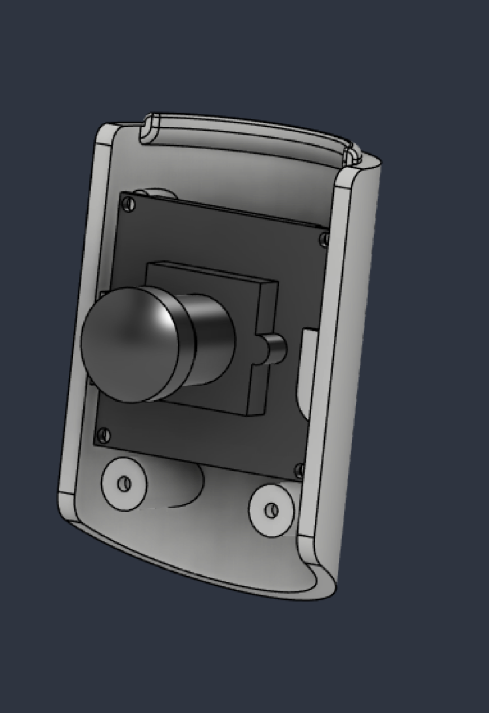

Hextronics Internship
Mechanical Engineering Intern — Summer 2026
Overview
Hextronics is a 20-person, Series-A startup building autonomous "drone-in-a-box" infrastructure — think a weatherproof charging/docking station that lets an inspection drone launch, fly a route, and land itself with no one on site. I spent the summer as the mechanical engineering intern, which on a team that small meant I got to touch almost every physical part of the product: fabrication, finishing, fixturing, and a couple of systems I designed start to finish. Below are the three pieces of work I'm most proud of.

Drone Arm Lighting System
Industrial inspection drones flying at night or in low visibility need to be seen, so I designed the lighting system mounted on the drone's arms to meet the FAA's 3-mile visibility requirement. That meant balancing optical output against weight, power draw, and survivability — the lights live on a fast-spinning, vibrating part of the aircraft, so the housing and mounting had to hold up to that abuse without adding meaningful mass to the airframe. I designed a snap-fit lens housing around a custom lens/PCB assembly so it could be reworked in the field without tools.


Drone Docking Station Fabrication
I led fabrication of the drone docking station prototypes for the product's public debut, printing the enclosures on industrial 3D printers. Since these were the units that would actually be shown to customers and investors, print quality alone wasn't good enough — I finished them using automotive painting techniques (filling, sanding, priming, and clear-coating) to get a surface finish that looked like an injection-molded production part instead of a prototype. I also worked with our suppliers on the production intent parts, applying DFM principles for injection molding and CNC machining once we moved past the prototype stage.


Weather Station
Since the docking station operates unattended outdoors, it needs to know the local weather before deciding it's safe to fly. I designed a weather station built around a Hall-effect anemometer for wind speed and a humidity sensor, both feeding live readings into the flight management system so it can make go/no-go decisions automatically.


